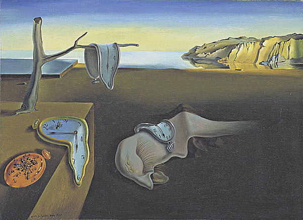
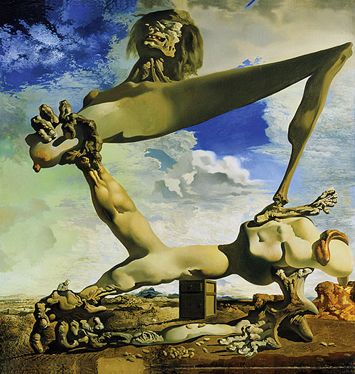
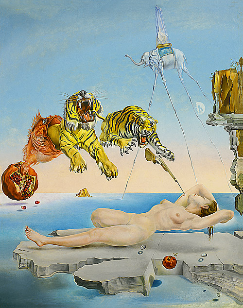
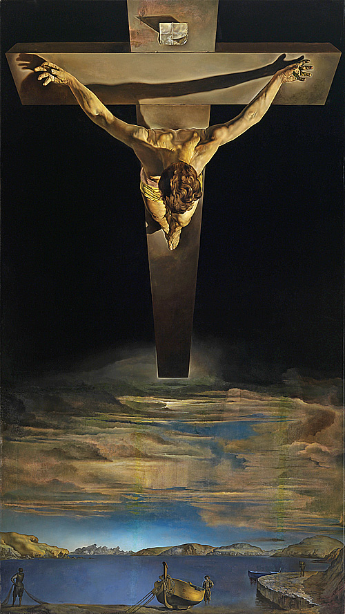

作品內容：達利最為人知曉的經典之作。畫面描繪了在荒涼海岸背景下，數個因受熱而軟化、流淌的時鐘，象徵著愛因斯坦相對論中「時間的相對性」，以及夢境中時間失去常態的虛無與永恆感。
《時光靜止》典型地體現了達利早期的超現實主義畫風，畫面展現的是一片空曠的海灘，海灘上躺著一隻似馬非 馬的怪物，它的前部又像是一個只有眼睫毛、鼻子和舌頭荒誕地組合在一起的人頭殘部。
怪物的一旁有一個平臺，平臺上長著一棵枯死的樹。而最令人驚奇的是出現在這幅畫中的好幾隻鐘錶都變成了柔 軟的有延展性的東西，它們顯得軟塌塌的，或掛在樹枝上，或搭在平臺上，或披在怪物的背上，好像這些用金 屬、玻璃等堅硬物質製成的鐘錶在太久的時間中已經疲憊不堪了，於是都松垮下來。
達利承認自己在這幅畫中表現了一種由佛洛德所揭示的個人夢境與幻覺，運用他那熟練的技巧精心刻畫那些離奇 的形象和細節，創造了一種引起幻覺的真實感，令觀眾看到一個在現實生活中根本看不到的離奇而有趣的景象， 體驗一下精神病人式的對現實世界秩序的解脫，這也許是超現實主義繪畫的真正的魅力所在。

作品內容：創作於西班牙內戰爆發前夕。畫中展現一個由肉體、關節與肌肉扭曲組成的巨大怪物正自我撕裂，背景是陰暗動盪的天空，強烈反映出達利對祖國即將陷入殘酷戰亂的極大恐懼與悲傷預感。
第二次世界大戰前夕，整個歐洲乃至世界都籠罩在法西斯的陰影之下。為了表現自己的恐懼和憤怒，達利在 這幅畫中將超現實主義的手法發揮得淋漓盡致。
整個畫面是荒誕又恐怖的，畫中的主體是人體經拆散後重新組合起來的形象，形似人的內臟的物體堆滿了整 個地面。整幅畫的中央被醜陋的手和腿框成一個四邊形，似乎暗示著四分五裂的西班牙。
畫面上方的那個腦袋，像是炫耀自己勝利的樣子，露出猙獰的奸笑。兩隻扭曲可怕的手，一隻在地上，象徵 被壓迫的人民；另一隻向上握住乳房的手，象徵掀起戰爭的禍首。畫家透過一隻被拉扯的乳房與相對的一隻 腳踝，以性暴力的形式表現恐懼。

作品內容：探索弗洛伊德潛意識理論的代表作。描繪妻子加拉在岩石上安睡，一隻蜜蜂在石榴周圍飛舞的瞬間，在夢境中激發出兩隻猛虎從巨魚口中躍出、刺刀即將刺入皮膚的奇異幻覺。
描繪的是加拉的一個夢境，一個由於蜜蜂的蜇刺而引起的荒誕離奇的夢。畫面上，裸體的加拉懸浮在一塊礁石上休憩，而礁石則漂浮在海面上。
在加拉身旁，一隻紅色石榴飄浮在礁石邊，一隻小蜜蜂正專心致至地圍繞著石榴“工作”。加拉的左上方，大石榴裂開了口，裂口中竄出一條大魚，魚誇張的大嘴中又躍出兩條斑斕猛虎，張牙舞爪地撲向加拉柔軟的軀體。 猛虎前面，一把槍直指加拉，尖尖的刺刀頭點在加拉的臂膀上，引起蜂蟄般的疼痛。遠處，一隻大象馱著尖頂方塔，邁著被極度拉長的竹杆般的四條腿走在海面上。
這樣的大象，我們在他 1946 年的《聖安東尼奧的誘惑》中又一次看到。一場由繞石榴飛舞的蜜蜂而引起的夢就這樣呈現在我們眼前，它的顏色清澈明亮，形象逼真寫實，但卻毫無邏輯性可言。

作品內容：達利晚期融合神祕主義與超現實主義的巨作。畫面採用前所未有的高空俯視角度，將耶穌受難十字架懸浮於黑暗迷幻的水面上，結合了幾何學美感與震撼人心的宗教神聖莊嚴感。
這幅畫描繪耶穌在十字架上，懸浮在黑暗的天空中，下方的水中有一隻船和漁民。雖然是描述基督受難，但 是缺少了釘、血，和荊棘冠冕，因為達利說他通過一個夢，相信這些特點會醜化他描繪的基督。
這幅畫被稱為《十字若望的基督》，因為它的設計是基於 16 世紀西班牙修士十字若望的一幅圖畫。對耶穌 的描繪，呈現一個三角形（耶穌的雙臂）和一個圓（耶穌的頭部）。三角形代表三位一體，圓可能是暗指柏 拉圖思想。達利解釋說，在 1950 年，他做了一個宇宙夢，夢中看到這幅彩色圖像。